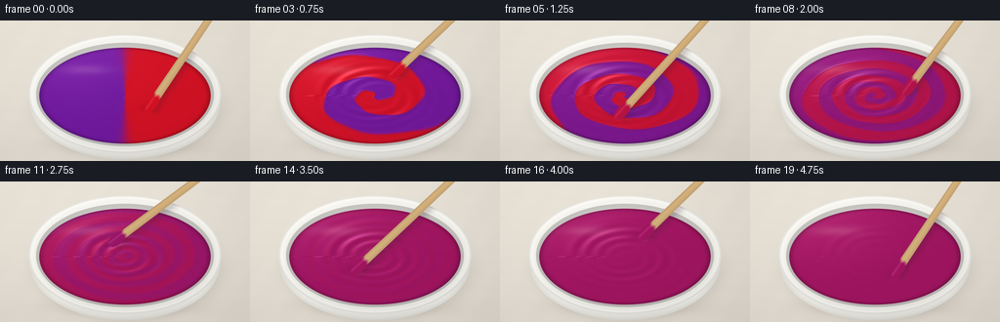
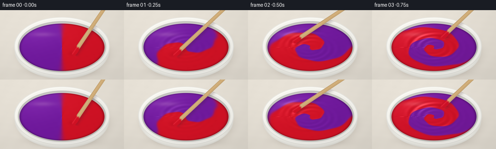

CODING AGENTS AS PIXEL WORLD MODELS
traex/GPT-6.1-Sol · material_0003
点击播放 · 原生 RGB 像素
逐轮保存的候选
回放视频、检查图与代码变化。
每份候选均可单独播放。实际图片检查记录在下方工具轨迹中。
候选 01播放与检查图
点击播放 · 原生 RGB 像素


展开代码变化
--- 上一保存版本
+++ 本次保存版本
@@ -0,0 +1,203 @@
+"""Deterministic RGB paint-mixing video, rendered with numpy and Pillow only."""
+from pathlib import Path
+import json
+import math
+import subprocess
+import numpy as np
+from PIL import Image
+import artifact_io
+
+ROOT = Path(__file__).resolve().parent
+SPEC = json.loads((ROOT / 'task_spec.json').read_text())
+S = 3
+W, H = SPEC['width'] * S, SPEC['height'] * S
+Y, X = np.mgrid[0:H, 0:W].astype(np.float32)
+X = (X + .5) / S
+Y = (Y + .5) / S
+rng = np.random.default_rng(207)
+
+
+def composite(dst, src, alpha):
+ a = np.clip(alpha, 0, 1)[..., None]
+ return dst * (1 - a) + np.asarray(src, dtype=np.float32) * a
+
+
+def coverage(q, scale=100):
+ return np.clip((1 - q) * scale + .5, 0, 1)
+
+# A softly lit pale stone work surface; fine texture is fixed in camera space.
+grain = rng.normal(0, .55, (H, W))
+stone = .55 * np.sin(X * .19 + Y * .12) + .35 * np.sin(Y * .46 - X * .06)
+light = 1.0 - .10 * ((X - 80) / 260)**2 - .085 * (Y / 180)**2
+background = np.stack([232*light+grain+stone,
+ 226*light+grain+stone,
+ 215*light+grain+stone], axis=-1)
+# Soft directional contact shadow, with the strongest occlusion at the base.
+shadow_r = np.sqrt(((X-131)/100)**2 + ((Y-88)/59)**2)
+shadow = .16*np.exp(-np.maximum(shadow_r-.83, 0)**2/ .022)
+shadow += .14*np.exp(-(((X-130)/82)**2+((Y-129)/9)**2)*1.4)
+background = composite(background, [104, 93, 83], np.clip(shadow, 0, .33))
+
+# Ceramic bowl, including the near-side wall and a rolled glazed rim.
+qb = np.sqrt(((X-128)/97.7)**2 + ((Y-83.2)/59.2)**2)
+side_light = .91 + .075*np.cos((X-114)/75) - .1*np.maximum((Y-118)/26, 0)
+body = np.stack([242*side_light, 241*side_light, 234*side_light], axis=-1)
+body -= (7*np.exp(-((qb-.99)/.027)**2))[..., None]
+background = composite(background, body, coverage(qb, 120))
+qo = np.sqrt(((X-128)/99)**2 + ((Y-75)/60.6)**2)
+theta_o = np.arctan2((Y-75)/60.6, (X-128)/99)
+rim_light = .945 + .039*np.cos(theta_o+2.0)
+rim_color = np.stack([250*rim_light, 249*rim_light, 243*rim_light], axis=-1)
+rim_color += (7*np.exp(-((qo-.966)/.021)**2))[..., None]
+rim_color -= (16*np.exp(-((qo-.995)/.016)**2))[..., None]
+background = composite(background, rim_color, coverage(qo, 110))
+qi = np.sqrt(((X-128)/91.1)**2 + ((Y-75.8)/53.1)**2)
+inner_edge = np.exp(-((qi-.97)/.085)**2)
+inner_shade = .91 - .115*inner_edge + .038*np.cos(theta_o+1.8)
+inner = np.stack([236*inner_shade, 235*inner_shade, 229*inner_shade], axis=-1)
+background = composite(background, inner, coverage(qi, 120))
+
+# Circular paint coordinates projected onto the elliptical bowl opening.
+u = (X-128) / 87.8
+v = (Y-77.0) / 49.2
+r = np.sqrt(u*u + v*v)
+angle = np.arctan2(v, u)
+paint_mask = coverage(r, 150)
+red = np.array([214, 18, 37], np.float32)
+purple = np.array([114, 25, 160], np.float32)
+
+
+def stir_position(t):
+ # Several energetic, continuous turns followed by a brief deceleration.
+ if t <= 4:
+ a = .8 + 5.8*t
+ else:
+ dt = t-4
+ a = .8 + 5.8*4 + 5.8*dt - (5.8/1.5)*dt*dt
+ rr = .39 + .075*math.sin(1.8*t)
+ return 128 + 87.8*rr*math.cos(a), 77 + 49.2*rr*math.sin(a), a, rr
+
+
+def material(t):
+ # Advected split: equal-area red and violet initially, stretched into
+ # progressively fine spiral lamellae. Homogenization removes contrast.
+ phase = angle + math.pi/2 - 3.0*t - 10.3*t*np.maximum(1-r,0)**1.35
+ phase += (1-math.exp(-t*1.2)) * (
+ .24*np.sin(3*angle+7*r-1.7*t) + .14*np.sin(5*angle-13*r+.6*t))
+ separation = math.exp(-(max(t-.4, 0)/1.6)**2)
+ sharpness = 13/(1+.48*t)
+ signed = np.tanh(sharpness*np.sin(phase))
+ ratio = .5 + .5*separation*signed
+ pigment = purple[None,None,:] + ratio[...,None]*(red-purple)[None,None,:]
+
+ # Thick paint with an uneven raised surface and glossy folds. The original
+ # seam becomes a curved crease; stirring generates low concentric ridges.
+ seam = np.exp(-18*np.sin(phase)**2)
+ strength = min(t/.65, 1)*max(.16, 1-max(t-3.75,0)*.95)
+ tx, ty, a, rr = stir_position(t)
+ wake_phase = 39*(r-rr) - 1.65*(angle-a)
+ annulus = np.exp(-((r-rr)/.22)**2)
+ wake = .0048*strength*np.sin(wake_phase)*annulus
+ h = .075*(1-np.minimum(r,1)**2)
+ h += .0065*separation*seam*(.4+.6*r)
+ h += wake
+ h += .0022*strength*np.sin(24*r-2.4*angle-3.7*t)*np.exp(-((r-.64)/.26)**2)
+ # A shallow depression immediately at the submerged paddle tip.
+ contact = np.exp(-(((X-tx)/9)**2 + ((Y-ty)/5.2)**2)*1.2)
+ h -= .011*contact
+ gy, gx = np.gradient(h, 1/(49.2*S), 1/(87.8*S))
+ nx, ny = -gx, -gy
+ nz = np.ones_like(nx)
+ norm = np.sqrt(nx*nx + ny*ny + nz*nz)
+ nx, ny, nz = nx/norm, ny/norm, nz/norm
+ # Warm key light, large reflection panel, and a smaller cool fill.
+ diffuse = np.clip(-.34*nx-.42*ny+.84*nz, 0, 1)
+ shade = .74 + .27*diffuse
+ shade -= .18*np.exp(-((r-.992)/.036)**2)
+ shade -= .05*contact
+ out = pigment*shade[...,None]
+ half_dot = np.clip(-.22*nx-.31*ny+.925*nz,0,1)
+ specular = np.power(half_dot, 38)
+ reflection_window = .23 + .77*np.exp(-(((u+.32)/.73)**2+((v+.29)/.79)**2))
+ specular *= reflection_window
+ out += specular[...,None]*np.array([68,65,64])
+ # The elongated upper-left studio highlight anchors the viscous surface.
+ soft = np.exp(-(((u+.45)/.33)**2 + ((v+.54)/.11)**2)*1.4)
+ out = composite(out, [255,231,227], soft*.14)
+ # Tiny broad impasto variation, never glitter or foam.
+ out += (.38*np.sin(27*u+11*v)*np.sin(24*v-8*u))[...,None]
+ return np.clip(out,0,255), tx, ty, ratio
+
+
+def wooden_stirrer(im, t, tx, ty, pigment_ratio):
+ # A wooden paddle viewed diagonally, held beyond the top-right frame edge.
+ ex, ey = 230+3*math.sin(t*.75), -25
+ dx, dy = ex-tx, ey-ty
+ length = math.hypot(dx,dy)
+ ax, ay = dx/length, dy/length
+ along = (X-tx)*ax + (Y-ty)*ay
+ across = -(X-tx)*ay + (Y-ty)*ax
+ halfwidth = 4.3 - .65*np.clip(along/length,0,1)
+ shaft = np.clip((halfwidth-np.abs(across))*S+.5,0,1)
+ shaft *= np.clip((along-5)*S+.5,0,1)*np.clip((length+8-along)*S+.5,0,1)
+ # The broad rounded working end is partly below the paint meniscus.
+ paddleq = np.sqrt(((along-7.5)/12.2)**2+(across/5.6)**2)
+ paddle = coverage(paddleq, 34)
+ mask = np.maximum(shaft, paddle)
+ # Projected shadow provides visible depth without obscuring the swirl.
+ shx, shy = X-2.8-tx, Y-4.2-ty
+ salong, sacross = shx*ax+shy*ay, -shx*ay+shy*ax
+ shadow = np.exp(-(sacross/5.3)**2)*np.clip(salong/4,0,1)*np.clip((length-salong)/6,0,1)
+ shadow *= .20*coverage(qo,100)
+ im = composite(im,[53,29,39],shadow)
+ # Fine, lengthwise wood grain and a cylindrical rounded edge.
+ woodgrain = 1.55*np.sin(across*3.4+.036*along+.38*np.sin(along*.14))
+ woodgrain += .65*np.sin(across*8.3+.017*along)
+ edge_shade = 1-.17*(np.abs(across)/5.7)**1.7
+ edge_shade += .035*np.exp(-((across+1.5)/1.2)**2)
+ wood = np.stack([208*edge_shade+woodgrain,
+ 173*edge_shade+woodgrain,
+ 121*edge_shade+woodgrain*.7],axis=-1)
+ # Burgundy/red-violet paint coating on the low end, continuously changing
+ # from the two separate pigments to the same final blended color.
+ py = int(np.clip(round(ty*S),0,H-1)); px=int(np.clip(round(tx*S),0,W-1))
+ ratio = float(pigment_ratio[py,px])
+ wet_color = purple+ratio*(red-purple)
+ wet = np.clip((18.5-along + .65*np.sin(across*1.2))/4,0,1)
+ wet_paint = wet_color[None,None,:]*(.89+.08*edge_shade[...,None])
+ wet_paint += (19*np.exp(-((across+1.75)/.9)**2))[...,None]
+ wood = wood*(1-wet[...,None])+wet_paint*wet[...,None]
+ # The lower lip meets the paint rather than floating above it.
+ submerged = np.clip((along+4.0)/3.5,0,1)
+ mask *= submerged
+ return composite(im,wood,mask)
+
+
+def render(i):
+ t = i / SPEC['fps']
+ paint, tx, ty, ratio = material(t)
+ image = composite(background, paint, paint_mask)
+ image = wooden_stirrer(image,t,tx,ty,ratio)
+ image = Image.fromarray(np.uint8(np.clip(image,0,255)), 'RGB')
+ return np.asarray(image.resize((SPEC['width'],SPEC['height']),Image.Resampling.LANCZOS))
+
+
+def main():
+ frames = np.stack([render(i) for i in range(SPEC['frames'])])
+ artifact_io.save(frames, ROOT)
+ # Also package an ordinary silent video when the locally bundled encoder
+ # is present. Rendering and all scene content above are self-contained.
+ try:
+ import imageio_ffmpeg
+ encoder = imageio_ffmpeg.get_ffmpeg_exe()
+ cmd=[encoder,'-hide_banner','-loglevel','error','-y','-f','rawvideo',
+ '-vcodec','rawvideo','-pix_fmt','rgb24','-s',f"{SPEC['width']}x{SPEC['height']}",
+ '-r',str(SPEC['fps']),'-i','-','-an','-c:v','libx264','-crf','17',
+ '-preset','medium','-pix_fmt','yuv420p','-movflags','+faststart',str(ROOT/'video.mp4')]
+ subprocess.run(cmd,input=frames.tobytes(),check=True)
+ except (ImportError,FileNotFoundError,subprocess.CalledProcessError):
+ pass
+ print(f"Saved {len(frames)} RGB frames at {frames.shape[2]}x{frames.shape[1]}.")
+
+if __name__ == '__main__':
+ main()
可观测工具轨迹
实际执行的命令与返回图片。
命令 1exit 0
/bin/bash -lc 'ls -la && cat prompt.txt && cat GENERATION_RULES.md && cat task_spec.json'
命令 2exit 0
/bin/bash -lc "cat artifact_io.py && python - <<'PY'
import numpy,PIL
print('numpy and pillow available')
PY"命令 3exit 0
/bin/bash -lc 'which ffmpeg || true && ls -la .tmp'
命令 4exit 0
/bin/bash -lc "python - <<'PY' import importlib.util for x in ['scipy','imageio','imageio_ffmpeg']: print(x, bool(importlib.util.find_spec(x))) PY"
命令 5exit 0
/bin/bash -lc "cat > generate.py <<'PY'
\"\"\"Deterministic RGB paint-mixing video, rendered with numpy and Pillow only.\"\"\"
from pathlib import Path
import json
import math
import subprocess
import numpy as np
from PIL import Image
import artifact_io
ROOT = Path(__file__).resolve().parent
SPEC = json.loads((ROOT / 'task_spec.json').read_text())
S = 3
W, H = SPEC['width'] * S, SPEC['height'] * S
Y, X = np.mgrid[0:H, 0:W].astype(np.float32)
X = (X + .5) / S
Y = (Y + .5) / S
rng = np.random.default_rng(207)
def composite(dst, src, alpha):
a = np.clip(alpha, 0, 1)[..., None]
return dst * (1 - a) + np.asarray(src, dtype=np.float32) * a
def coverage(q, scale=100):
return np.clip((1 - q) * scale + .5, 0, 1)
# A softly lit pale stone work surface; fine texture is fixed in camera space.
grain = rng.normal(0, .55, (H, W))
stone = .55 * np.sin(X * .19 + Y * .12) + .35 * np.sin(Y * .46 - X * .06)
light = 1.0 - .10 * ((X - 80) / 260)**2 - .085 * (Y / 180)**2
background = np.stack([232*light+grain+stone,
226*light+grain+stone,
215*light+grain+stone], axis=-1)
# Soft directional contact shadow, with the strongest occlusion at the base.
shadow_r = np.sqrt(((X-131)/100)**2 + ((Y-88)/59)**2)
shadow = .16*np.exp(-np.maximum(shadow_r-.83, 0)**2/ .022)
shadow += .14*np.exp(-(((X-130)/82)**2+((Y-129)/9)**2)*1.4)
background = composite(background, [104, 93, 83], np.clip(shadow, 0, .33))
# Ceramic bowl, including the near-side wall and a rolled glazed rim.
qb = np.sqrt(((X-128)/97.7)**2 + ((Y-83.2)/59.2)**2)
side_light = .91 + .075*np.cos((X-114)/75) - .1*np.maximum((Y-118)/26, 0)
body = np.stack([242*side_light, 241*side_light, 234*side_light], axis=-1)
body -= (7*np.exp(-((qb-.99)/.027)**2))[..., None]
background = composite(background, body, coverage(qb, 120))
qo = np.sqrt(((X-128)/99)**2 + ((Y-75)/60.6)**2)
theta_o = np.arctan2((Y-75)/60.6, (X-128)/99)
rim_light = .945 + .039*np.cos(theta_o+2.0)
rim_color = np.stack([250*rim_light, 249*rim_light, 243*rim_light], axis=-1)
rim_color += (7*np.exp(-((qo-.966)/.021)**2))[..., None]
rim_color -= (16*np.exp(-((qo-.995)/.016)**2))[..., None]
background = composite(background, rim_color, coverage(qo, 110))
qi = np.sqrt(((X-128)/91.1)**2 + ((Y-75.8)/53.1)**2)
inner_edge = np.exp(-((qi-.97)/.085)**2)
inner_shade = .91 - .115*inner_edge + .038*np.cos(theta_o+1.8)
inner = np.stack([236*inner_shade, 235*inner_shade, 229*inner_shade], axis=-1)
background = composite(background, inner, coverage(qi, 120))
# Circular paint coordinates projected onto the elliptical bowl opening.
u = (X-128) / 87.8
v = (Y-77.0) / 49.2
r = np.sqrt(u*u + v*v)
angle = np.arctan2(v, u)
paint_mask = coverage(r, 150)
red = np.array([214, 18, 37], np.float32)
purple = np.array([114, 25, 160], np.float32)
def stir_position(t):
# Several energetic, continuous turns followed by a brief deceleration.
if t <= 4:
a = .8 + 5.8*t
else:
dt = t-4
a = .8 + 5.8*4 + 5.8*dt - (5.8/1.5)*dt*dt
rr = .39 + .075*math.sin(1.8*t)
return 128 + 87.8*rr*math.cos(a), 77 + 49.2*rr*math.sin(a), a, rr
def material(t):
# Advected split: equal-area red and violet initially, stretched into
# progressively fine spiral lamellae. Homogenization removes contrast.
phase = angle + math.pi/2 - 3.0*t - 10.3*t*np.maximum(1-r,0)**1.35
phase += (1-math.exp(-t*1.2)) * (
.24*np.sin(3*angle+7*r-1.7*t) + .14*np.sin(5*angle-13*r+.6*t))
separation = math.exp(-(max(t-.4, 0)/1.6)**2)
sharpness = 13/(1+.48*t)
signed = np.tanh(sharpness*np.sin(phase))
ratio = .5 + .5*separation*signed
pigment = purple[None,None,:] + ratio[...,None]*(red-purple)[None,None,:]
# Thick paint with an uneven raised surface and glossy folds. The original
# seam becomes a curved crease; stirring generates low concentric ridges.
seam = np.exp(-18*np.sin(phase)**2)
strength = min(t/.65, 1)*max(.16, 1-max(t-3.75,0)*.95)
tx, ty, a, rr = stir_position(t)
wake_phase = 39*(r-rr) - 1.65*(angle-a)
annulus = np.exp(-((r-rr)/.22)**2)
wake = .0048*strength*np.sin(wake_phase)*annulus
h = .075*(1-np.minimum(r,1)**2)
h += .0065*separation*seam*(.4+.6*r)
h += wake
h += .0022*strength*np.sin(24*r-2.4*angle-3.7*t)*np.exp(-((r-.64)/.26)**2)
# A shallow depression immediately at the submerged paddle tip.
contact = np.exp(-(((X-tx)/9)**2 + ((Y-ty)/5.2)**2)*1.2)
h -= .011*contact
gy, gx = np.gradient(h, 1/(49.2*S), 1/(87.8*S))
nx, ny = -gx, -gy
nz = np.ones_like(nx)
norm = np.sqrt(nx*nx + ny*ny + nz*nz)
nx, ny, nz = nx/norm, ny/norm, nz/norm
# Warm key light, large reflection panel, and a smaller cool fill.
diffuse = np.clip(-.34*nx-.42*ny+.84*nz, 0, 1)
shade = .74 + .27*diffuse
shade -= .18*np.exp(-((r-.992)/.036)**2)
shade -= .05*contact
out = pigment*shade[...,None]
half_dot = np.clip(-.22*nx-.31*ny+.925*nz,0,1)
specular = np.power(half_dot, 38)
reflection_window = .23 + .77*np.exp(-(((u+.32)/.73)**2+((v+.29)/.79)**2))
specular *= reflection_window
out += specular[...,None]*np.array([68,65,64])
# The elongated upper-left studio highlight anchors the viscous surface.
soft = np.exp(-(((u+.45)/.33)**2 + ((v+.54)/.11)**2)*1.4)
out = composite(out, [255,231,227], soft*.14)
# Tiny broad impasto variation, never glitter or foam.
out += (.38*np.sin(27*u+11*v)*np.sin(24*v-8*u))[...,None]
return np.clip(out,0,255), tx, ty, ratio
def wooden_stirrer(im, t, tx, ty, pigment_ratio):
# A wooden paddle viewed diagonally, held beyond the top-right frame edge.
ex, ey = 230+3*math.sin(t*.75), -25
dx, dy = ex-tx, ey-ty
length = math.hypot(dx,dy)
ax, ay = dx/length, dy/length
along = (X-tx)*ax + (Y-ty)*ay
across = -(X-tx)*ay + (Y-ty)*ax
halfwidth = 4.3 - .65*np.clip(along/length,0,1)
shaft = np.clip((halfwidth-np.abs(across))*S+.5,0,1)
shaft *= np.clip((along-5)*S+.5,0,1)*np.clip((length+8-along)*S+.5,0,1)
# The broad rounded working end is partly below the paint meniscus.
paddleq = np.sqrt(((along-7.5)/12.2)**2+(across/5.6)**2)
paddle = coverage(paddleq, 34)
mask = np.maximum(shaft, paddle)
# Projected shadow provides visible depth without obscuring the swirl.
shx, shy = X-2.8-tx, Y-4.2-ty
salong, sacross = shx*ax+shy*ay, -shx*ay+shy*ax
shadow = np.exp(-(sacross/5.3)**2)*np.clip(salong/4,0,1)*np.clip((length-salong)/6,0,1)
shadow *= .20*coverage(qo,100)
im = composite(im,[53,29,39],shadow)
# Fine, lengthwise wood grain and a cylindrical rounded edge.
woodgrain = 1.55*np.sin(across*3.4+.036*along+.38*np.sin(along*.14))
woodgrain += .65*np.sin(across*8.3+.017*along)
edge_shade = 1-.17*(np.abs(across)/5.7)**1.7
edge_shade += .035*np.exp(-((across+1.5)/1.2)**2)
wood = np.stack([208*edge_shade+woodgrain,
173*edge_shade+woodgrain,
121*edge_shade+woodgrain*.7],axis=-1)
# Burgundy/red-violet paint coating on the low end, continuously changing
# from the two separate pigments to the same final blended color.
py = int(np.clip(round(ty*S),0,H-1)); px=int(np.clip(round(tx*S),0,W-1))
ratio = float(pigment_ratio[py,px])
wet_color = purple+ratio*(red-purple)
wet = np.clip((18.5-along + .65*np.sin(across*1.2))/4,0,1)
wet_paint = wet_color[None,None,:]*(.89+.08*edge_shade[...,None])
wet_paint += (19*np.exp(-((across+1.75)/.9)**2))[...,None]
wood = wood*(1-wet[...,None])+wet_paint*wet[...,None]
# The lower lip meets the paint rather than floating above it.
submerged = np.clip((along+4.0)/3.5,0,1)
mask *= submerged
return composite(im,wood,mask)
def render(i):
t = i / SPEC['fps']
paint, tx, ty, ratio = material(t)
image = composite(background, paint, paint_mask)
image = wooden_stirrer(image,t,tx,ty,ratio)
image = Image.fromarray(np.uint8(np.clip(image,0,255)), 'RGB')
return np.asarray(image.resize((SPEC['width'],SPEC['height']),Image.Resampling.LANCZOS))
def main():
frames = np.stack([render(i) for i in range(SPEC['frames'])])
artifact_io.save(frames, ROOT)
# Also package an ordinary silent video when the locally bundled encoder
# is present. Rendering and all scene content above are self-contained.
try:
import imageio_ffmpeg
encoder = imageio_ffmpeg.get_ffmpeg_exe()
cmd=[encoder,'-hide_banner','-loglevel','error','-y','-f','rawvideo',
'-vcodec','rawvideo','-pix_fmt','rgb24','-s',f\"{SPEC['width']}x{SPEC['height']}\",
'-r',str(SPEC['fps']),'-i','-','-an','-c:v','libx264','-crf','17',
'-preset','medium','-pix_fmt','yuv420p','-movflags','+faststart',str(ROOT/'video.mp4')]
subprocess.run(cmd,input=frames.tobytes(),check=True)
except (ImportError,FileNotFoundError,subprocess.CalledProcessError):
pass
print(f\"Saved {len(frames)} RGB frames at {frames.shape[2]}x{frames.shape[1]}.\")
if __name__ == '__main__':
main()
PY
python generate.py"命令 6exit 0
/bin/bash -lc "python - <<'PY'
from pathlib import Path
import json,numpy as np
from PIL import Image
root=Path('.')
s=json.loads((root/'task_spec.json').read_text())
p=np.load('pixels.npz')['pixels']
assert p.shape==(s['height'],s['width'],s['frames'])
files=sorted((root/'frames').glob('*.png'))
assert len(files)==20
for f in files:
im=Image.open(f)
assert im.mode=='RGB' and im.size==(256,144)
print('Validated 20 RGB frames, 256 Ã 144, 4 fps / 5 seconds.')
print('Artifacts:', ', '.join(f'{name} ({(root/name).stat().st_size:,} bytes)' for name in ['generate.py','pixels.npz','video.mp4','index.html','inspection.png']))
PY"保存候选 1 份；完成命令 6 次；可验证图片返回 0 张。原始 API 响应与完整日志保留在本地。